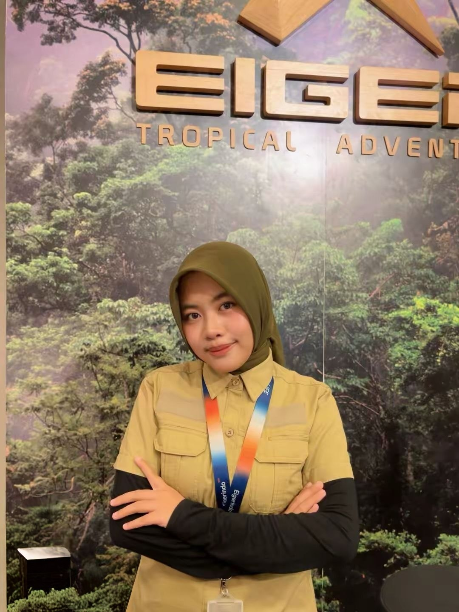

25 MAR — 09 AUG 2026
PT Eigerindo MPI

Retail Assistant
Eiger Wonosari
- Melayani pelanggan dan membantu memberikan rekomendasi produk.
- Menangani pertanyaan dan keluhan pelanggan.
- Membantu kegiatan operasional toko, penataan produk, dan pengecekan stok.
- Menjalankan pekerjaan sesuai prosedur dan bekerja sama dengan tim.